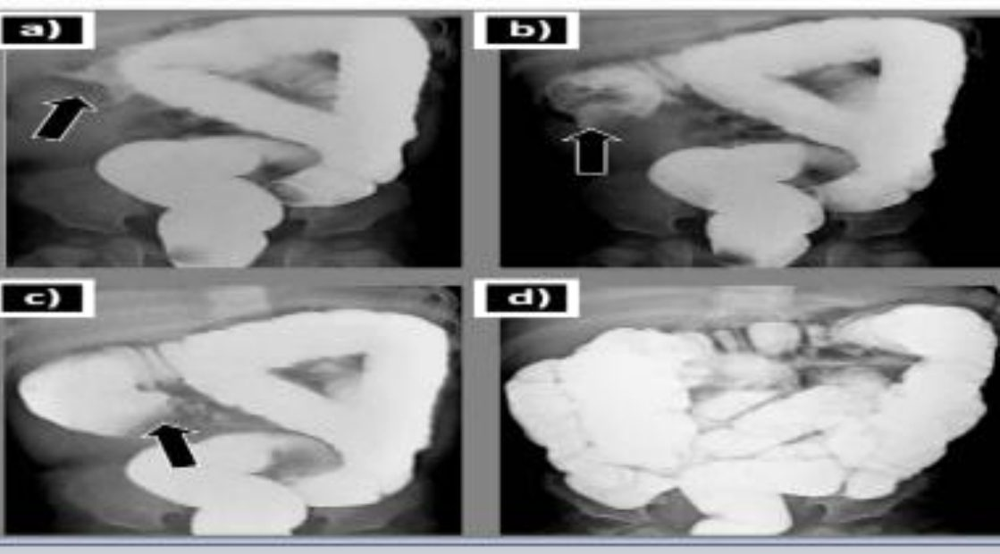
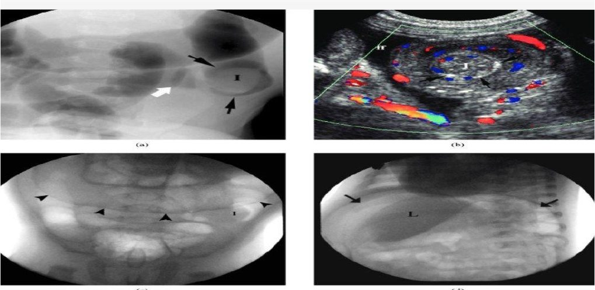
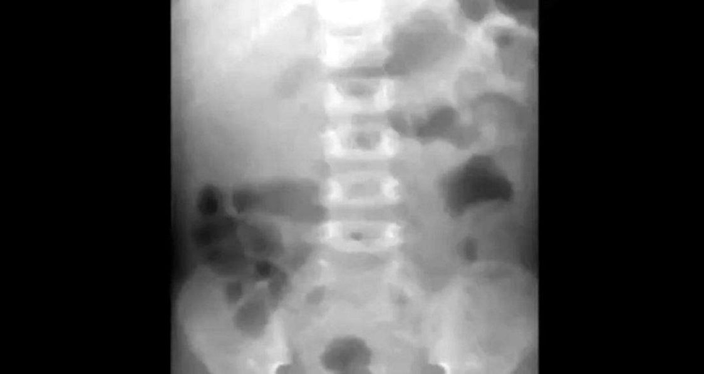

تقليل الانغلاف المعويLecture 6: Reduction of an intussusception
نظري · م06 · 5.3 دقيقةأقسام المحاضرة (9)
- تعريف الانغلاف المعوي ووبائيتهReduction of an intussusception
- الأعراض والعلامات السريريةCLINICAL FEATURES
- طرق التقليلMethods
- موانع الاستعمال وتحضير المريضContraindications & Patient Preparation
- مادة التباين والتقنية الهوائيةContrast Medium & Technique
- الفحوصات الأوليةPreliminary Investigations
- التقليل بالباريوم والمتابعةBarium reduction (now rarely used)
- التقليل بالموجات فوق الصوتيةUltrasound reduction
- صور التقليل بالباريوم وبالهواءBarium and air reduction images
تعريف الانغلاف المعوي ووبائيتهReduction of an intussusception
تقليل الانغلاف المعويReduction of an intussusception
- • An intussusception is a form of bowel obstruction in which one segment of intestine telescopes inside of another.الانغلاف المعوي شكل من أشكال انسداد الأمعاء، يتداخل فيه جزء من الأمعاء داخل جزء آخر.
- • Although it can occur anywhere in the gastrointestinal tract, it usually occurs at the junction of the small and large intestines.ومع أنه قد يحدث في أي مكان من الجهاز الهضمي، فإنه يحدث عادةً عند الوصل بين الأمعاء الدقيقة والغليظة.
علم الوبائياتEPIDEMIOLOGY:
It occurs mostly between 6 months to 3yrs ((It is the most common cause of intestinal obstruction in this age group))
يحدث غالباً بين عمر 6 أشهر و3 سنوات ((وهو السبب الأشيع لانسداد الأمعاء في هذه الفئة العمرية)).
M:F = 3:2
نسبة الذكور إلى الإناث 3:2.
الأعراض والعلامات السريريةCLINICAL FEATURES
الأعراض والعلامات السريريةCLINICAL FEATURES:
- • Historyالتاريخ المرضي
- • Ageالعمر
- • Sexالجنس
- • Abdominal pain (sudden onset, intermittent, severe, crampy progressive, accompanied by inconsolable crying and drawing up of the legs toward the abdomen)ألم بطني (يبدأ فجأة، متقطع، شديد، تقلصي متزايد، يصاحبه بكاء لا يُهدَّأ وسحب الساقين نحو البطن).
- • Vomitingقيء
- • Rectal bleeding (red currant jelly stool)نزيف شرجي (براز يشبه هلام الكشمش الأحمر).
- • Lethargyخمول
طرق التقليلMethods
الطرقMethods:
1. Using air and fluoroscopy(pneumatic method). Barium is no longer used in the majority of centres as air reduction has the following advantages:
1. استخدام الهواء والتنظير الشعاعي (fluoroscopy) (الطريقة الهوائية). لم يعد الباريوم يُستخدم في معظم المراكز لأن التقليل بالهواء له المزايا الآتية:
- • More rapid reduction, because the low viscosity of air permits rapid filling of the colon.تقليل أسرع، لأن اللزوجة المنخفضة للهواء تسمح بملء القولون بسرعة.
- • reduced radiation dose.جرعة إشعاع أقل.
- • Safe if there is perforation.آمن عند وجود انثقاب.
- • More effective reduction.تقليل أكثر فعالية.
- • Less expensive.أقل كلفة.
2. Using a water-soluble contrast medium and US.
2. استخدام مادة تباين ذائبة في الماء والموجات فوق الصوتية (US).
3. Using Barium (now rarely used).
3. استخدام الباريوم (نادر الاستعمال الآن).
موانع الاستعمال وتحضير المريضContraindications & Patient Preparation
موانع الاستعمالContraindications :
- 1. Peritonitis, perforation or shock.التهاب الصفاق أو الانثقاب أو الصدمة.
- 2. Over 4 years age (technical difficulty).العمر فوق 4 سنوات (صعوبة تقنية).
- 3. Signs of complete obstruction and unstable patient.علامات الانسداد الكامل مع مريض غير مستقر.
تحضير المريضPatient Preparation:
- 1. Sedation is of questionable value, but analgesia is important Correction of fluid and electrolyte imbalance.قيمة التهدئة مشكوك فيها، لكن التسكين مهم؛ وتصحيح اختلال السوائل والكهارل.
- 2. Correction of fluid and electrolyte imbalance. The child requires an i.v. line in situ.تصحيح اختلال السوائل والكهارل. يحتاج الطفل إلى خط وريدي (i.v. line) في موضعه.
مادة التباين والتقنية الهوائيةContrast Medium & Technique
مادة التباينContrast Medium:
- • Air.الهواء.
- • Barium sulphate 100% w/v (now rarely used).كبريتات الباريوم بتركيز 100% وزن/حجم (نادرة الاستعمال الآن).
- • Water-soluble contrast—e.g. LOCM 150 or dilute Gastrografin (one part Gastrografin to four or five parts water).مادة تباين ذائبة في الماء، مثل LOCM 150 أو Gastrografin المخفف (جزء واحد من الغاستروغرافين إلى أربعة أو خمسة أجزاء من الماء).
التقنيةTechnique:
A 16–22-F balloon catheter is inserted into the rectum,
تُدخل قسطرة بالونية قياسها 16–22 فرنش إلى المستقيم،
First: Pneumatic reduction
أولاً: التقليل الهوائي (Pneumatic reduction)
- 1. The child is placed in the prone position.يوضع الطفل بوضعية الانبطاح.
- 2. Air is instilled by a mechanical pump and the intussusception is pushed back by a sustained pressure of up to 80 mmHgيُضخ الهواء بمضخة ميكانيكية، ويُدفع الانغلاف إلى الخلف بضغط مستمر يصل إلى 80 ملم زئبق.
- 3. Reduction is considered successful when there is free flow of air into the distal ileum.يُعدّ التقليل ناجحاً عند تدفق الهواء بحرية إلى اللفائفي البعيد.
If the intussusception does not move after 3 min of sustained pressure, the pressure is reduced and the child rested for 3 minutes.
إذا لم يتحرك الانغلاف بعد 3 دقائق من الضغط المستمر، يُخفَّف الضغط ويُترك الطفل ليستريح 3 دقائق.
Two further attempts are made increasing the pressure to 120 mmHg for 3 minutes with a 3 minute rest.
تُجرى محاولتان إضافيتان برفع الضغط إلى 120 ملم زئبق لمدة 3 دقائق مع راحة 3 دقائق.
If the intussusception is still immovable it is considered irreducible and arrangements are made for surgery.
وإذا بقي الانغلاف غير متحرك فهو يُعدّ غير قابل للتقليل، وتُتخذ الترتيبات لإجراء عملية جراحية.
The intussusception is only considered completely reduced when the terminal ileum is filled with air.
لا يُعدّ الانغلاف مُقلَّلاً بالكامل إلا عند امتلاء اللفائفي النهائي بالهواء.
الفحوصات الأوليةPreliminary Investigations
الفحوصات الأوليةPreliminary Investigations:
- • Plain abdominal film—to assess bowel distension and to exclude perforation.صورة البطن البسيطة لتقييم تمدد الأمعاء واستبعاد الانثقاب.
- • US—should confirm or exclude the diagnosis. Absence of blood flow within the intussusceptum on colour-flow Doppler should lead to cautious reduction.الموجات فوق الصوتية لتأكيد التشخيص أو نفيه. ويجب أن يؤدي غياب التدفق الدموي داخل الجزء المنغلف (intussusceptum) في الدوبلر الملون إلى تقليل حذر.
التقليل بالباريوم والمتابعةBarium reduction (now rarely used)
ثانياً: التقليل بالباريوم (نادر الاستعمال الآن)Second: Barium reduction (now rarely used)
Patient positioning is as for the pneumatic method.
يوضع المريض كما في الطريقة الهوائية.
The bag containing barium is raised 100 cm above the table top and barium run in under hydrostatic pressure. Progress of the column of barium is monitored by intermittent fluoroscopy.
يُرفع الكيس المحتوي على الباريوم 100 سم فوق سطح الطاولة، ويُترك الباريوم يجري تحت الضغط الهيدروستاتيكي. ويُراقب تقدم عمود الباريوم بالتنظير الشعاعي المتقطع.
If the intussusception does not move after 3 min of sustained pressure, the bag of barium is lowered and the child rested for 3 min.
إذا لم يتحرك الانغلاف بعد 3 دقائق من الضغط المستمر، يُخفض كيس الباريوم ويُترك الطفل ليستريح 3 دقائق.
If, after three similar attempts, the intussusception is still immovable it is considered irreducible and arrangements are made for surgery.
وإذا بقي الانغلاف غير متحرك بعد ثلاث محاولات مماثلة، فهو يُعدّ غير قابل للتقليل، وتُتخذ الترتيبات لإجراء عملية جراحية.
الصورImages:
- 1. Spot films as requiredأفلام موضعية (spot films) حسب الحاجة.
- 2. Post-reduction film.فيلم ما بعد التقليل.
الرعاية اللاحقةAftercare:
- • Observation in hospital for 24 h.مراقبة في المستشفى لمدة 24 ساعة.
المضاعفاتComplications:
- 1. Perforation .انثقاب.
- 2. Pneumoperitoneum.استرواح الصفاق (هواء حر في البطن).
التقليل بالموجات فوق الصوتيةUltrasound reduction
ثالثاً: التقليل بالموجات فوق الصوتيةThird: Ultrasound reduction:
- • To facilitate scanning the child must be supine.لتسهيل الفحص يجب أن يكون الطفل مستلقياً على ظهره.
- • The intussusception can be identified with US. Rectal saline or Hartmann’s solution is run as far as the obstruction, and its passage around the colon and the reducing head of the intussusception is monitored by US.يمكن تحديد الانغلاف بالموجات فوق الصوتية. يُمرَّر محلول ملحي شرجي أو محلول هارتمان حتى موضع الانسداد، ويُراقب بالموجات فوق الصوتية مروره حول القولون ورأس الانغلاف أثناء تقليله.
- • The points regarding failed or incomplete reduction discussed previously also apply to this technique.وتنطبق على هذه التقنية أيضاً النقاط التي نوقشت سابقاً بشأن فشل التقليل أو عدم اكتماله.
صور التقليل بالباريوم وبالهواءBarium and air reduction images
تقليل الانغلاف بالباريومBarium reduction of intussusception

لاحظ التقليل بالهواء للانغلافNotice air reduction of intussusception


المحاضرة مسموعة
نص الأستاذ بالإنكليزي مثل الأصل · 5.3 دقيقة. اضغط أي جملة تسمعها، أو مصطلح منقّط تسمع لفظه ومعناه.
Reduction of an intussusceptionتعريف الانغلاف المعوي ووبائيته
Reduction of an intussusception
Reduction of an intussusception
An intussusception is a form of bowel obstruction in which one segment of intestine telescopes inside of another.
Although it can occur anywhere in the gastrointestinal tract, it usually occurs at the junction of the small and large intestines.
EPIDEMIOLOGY:
It occurs mostly between 6 months to 3yrs ((It is the most common cause of intestinal obstruction in this age group))
M:F = 3:2
CLINICAL FEATURESالأعراض والعلامات السريرية
CLINICAL FEATURES
CLINICAL FEATURES:
History
Age
Sex
Abdominal pain (sudden onset, intermittent, severe, crampy progressive, accompanied by inconsolable crying and drawing up of the legs toward the abdomen)
Vomiting
Rectal bleeding (red currant jelly stool)
Lethargy
Methodsطرق التقليل
Methods
Methods:
1. Using air and fluoroscopy(pneumatic method). Barium is no longer used in the majority of centres as air reduction has the following advantages:
More rapid reduction, because the low viscosity of air permits rapid filling of the colon.
reduced radiation dose.
Safe if there is perforation.
More effective reduction.
Less expensive.
2. Using a water-soluble contrast medium and US.
3. Using Barium (now rarely used).
Contraindications & Patient Preparationموانع الاستعمال وتحضير المريض
Contraindications & Patient Preparation
Contraindications :
Peritonitis, perforation or shock.
Over 4 years age (technical difficulty).
Signs of complete obstruction and unstable patient.
Patient Preparation:
Sedation is of questionable value, but analgesia is important Correction of fluid and electrolyte imbalance.
Correction of fluid and electrolyte imbalance. The child requires an i.v. line in situ.
Contrast Medium & Techniqueمادة التباين والتقنية الهوائية
Contrast Medium & Technique
Contrast Medium:
Air.
Barium sulphate 100% w/v (now rarely used).
Water-soluble contrast—e.g. LOCM 150 or dilute Gastrografin (one part Gastrografin to four or five parts water).
Technique:
A 16–22-F balloon catheter is inserted into the rectum,
First: Pneumatic reduction
The child is placed in the prone position.
Air is instilled by a mechanical pump and the intussusception is pushed back by a sustained pressure of up to 80 mmHg
Reduction is considered successful when there is free flow of air into the distal ileum.
If the intussusception does not move after 3 min of sustained pressure, the pressure is reduced and the child rested for 3 minutes.
Two further attempts are made increasing the pressure to 120 mmHg for 3 minutes with a 3 minute rest.
If the intussusception is still immovable it is considered irreducible and arrangements are made for surgery.
The intussusception is only considered completely reduced when the terminal ileum is filled with air.
Preliminary Investigationsالفحوصات الأولية
Preliminary Investigations
Preliminary Investigations:
Plain abdominal film—to assess bowel distension and to exclude perforation.
US—should confirm or exclude the diagnosis. Absence of blood flow within the intussusceptum on colour-flow Doppler should lead to cautious reduction.
Barium reduction (now rarely used)التقليل بالباريوم والمتابعة
Barium reduction (now rarely used)
Second: Barium reduction (now rarely used)
Patient positioning is as for the pneumatic method.
The bag containing barium is raised 100 cm above the table top and barium run in under hydrostatic pressure. Progress of the column of barium is monitored by intermittent fluoroscopy.
If the intussusception does not move after 3 min of sustained pressure, the bag of barium is lowered and the child rested for 3 min.
If, after three similar attempts, the intussusception is still immovable it is considered irreducible and arrangements are made for surgery.
Images:
Spot films as required
Post-reduction film.
Aftercare:
Observation in hospital for 24 h.
Complications:
Perforation .
Pneumoperitoneum.
Ultrasound reductionالتقليل بالموجات فوق الصوتية
Ultrasound reduction
Third: Ultrasound reduction:
To facilitate scanning the child must be supine.
The intussusception can be identified with US. Rectal saline or Hartmann’s solution is run as far as the obstruction, and its passage around the colon and the reducing head of the intussusception is monitored by US.
The points regarding failed or incomplete reduction discussed previously also apply to this technique.
Barium and air reduction imagesصور التقليل بالباريوم وبالهواء
Barium and air reduction images
Barium reduction of intussusception
Notice air reduction of intussusception
كل أسئلة المحاضرة: السؤال إنكليزي وتحته عربي، وكل خيار بلغتين، والجواب الصحيح معلّم ويّاه «ليش صح» · 0.3 MB
قراءة الأسئلة تحميلاضغط أي مصطلح منقّط تسمع لفظه ومعناه.